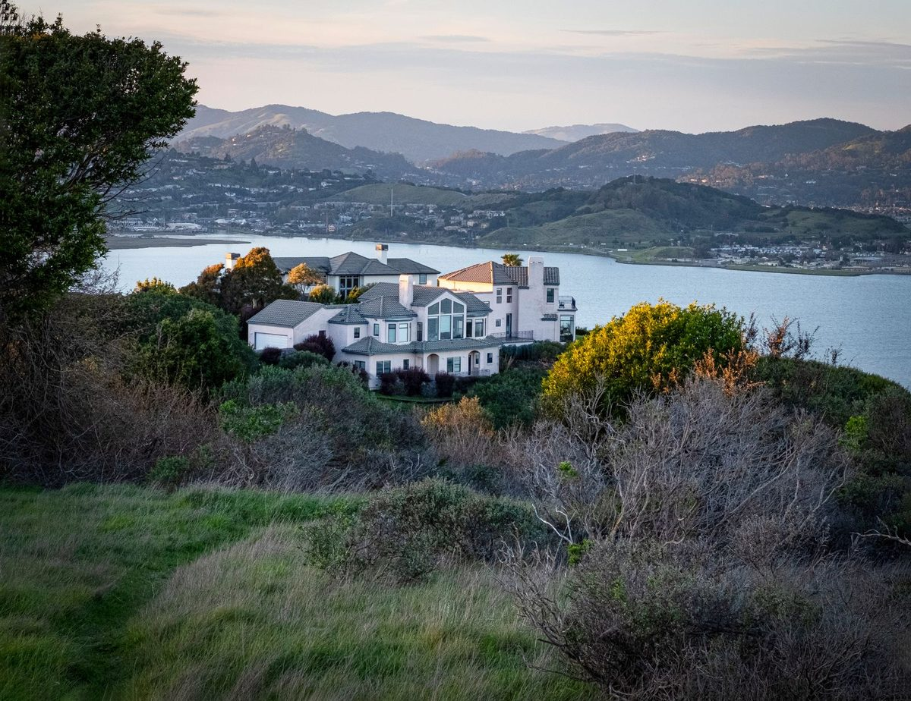
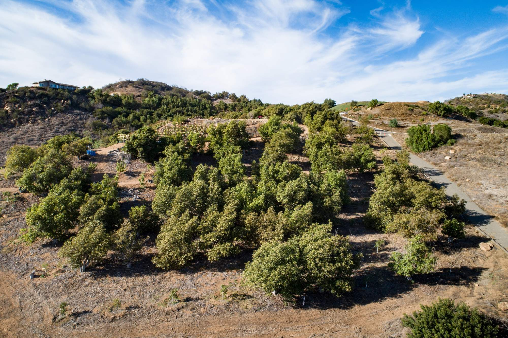
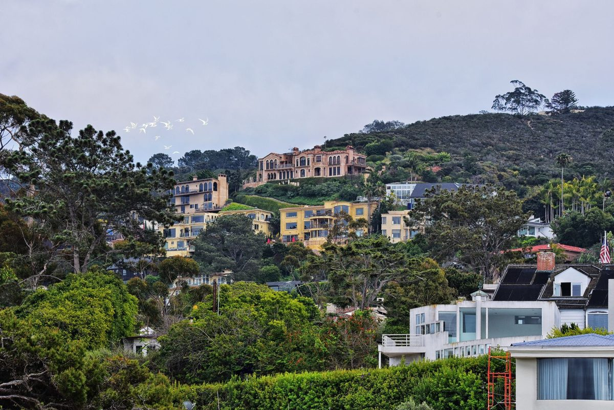
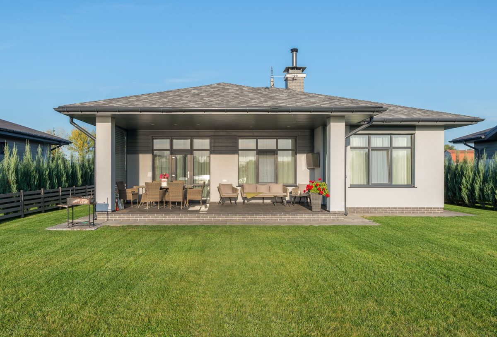
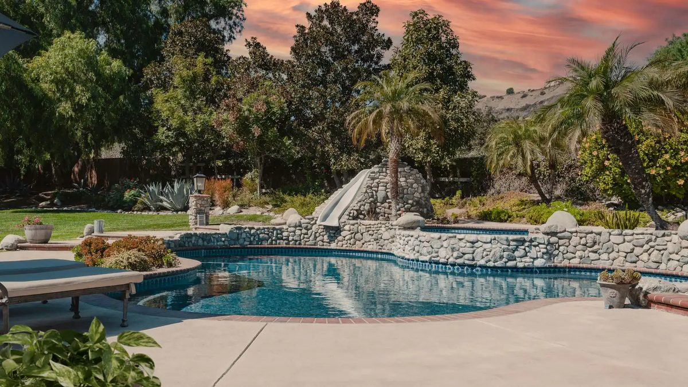
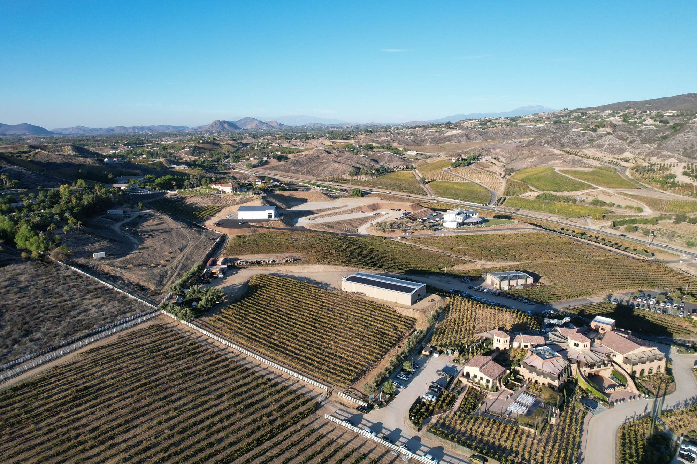
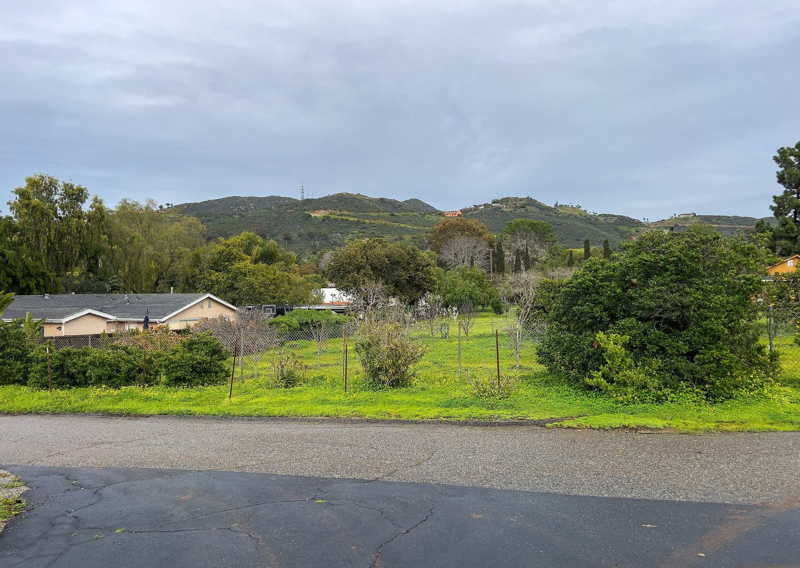

01
Fallbrook homes on an acre or more
Single-family listings on lots of one acre and up, inside and outside the groves.
View homes

Fallbrook, California
Homes and land for sale in Fallbrook, plus the rural details to check before you make an offer.
The lay of the land
Fallbrook is an unincorporated community in north San Diego County, east of Camp Pendleton and south of the Riverside County line. The County describes most of it as rolling hills covered in avocado and citrus orchards.
The town center sits near the western edge and grew up around a historic downtown on Main Avenue. Outside the village boundary, the County's community plan holds to semi-rural and rural densities and encourages country estates that pair a house with light agriculture, especially groves. The Santa Margarita River cuts through rugged land in the north, and the San Luis Rey River marks the southern line with Bonsall. Interstate 15 runs along the steep eastern side.
11min
Interstate 15 at Mission Road
21min
Temecula
34min
Escondido
74min
San Diego International Airport
From the Fallbrook Post Office on South Main Avenue, without traffic (OSRM routing, checked 2026-10-16).
Live Oak County Park
Picnic areas and ballfields under old oaks on Reche Road.
Los Jilgueros Preserve
Looping trails along Ostrich Farms Creek in the middle of town.
Monserate Mountain Preserve
A steep trail beside I-15 with a view from the Pacific to Pauma Valley.
Santa Margarita County Preserve
River trails off De Luz Road, with a horse corral at the staging area.
Fallbrook Art Center
Exhibitions in the village at 103 South Main Avenue.
Saved searches
Each card opens a live search of CRMLS listings, updated as they change.

01
Single-family listings on lots of one acre and up, inside and outside the groves.
View homes

02
Listings the MLS marks as horse property, on lots of one acre and up.
View homes

03

04
The name comes from Fall Brook, Pennsylvania, home of the Reche brothers, who started a farm here in 1869. The downtown that grew up later served the groves with packing plants and stores, and the County's plan now calls its original blocks Historic Fallbrook. It has since become an arts district, with galleries along Main Avenue, and the Fallbrook Art Center holds exhibitions at 103 South Main.
Each spring the Fallbrook Chamber of Commerce puts on the Avocado Festival downtown, a nod to the town's title as the Avocado Capital of the World. The Fallbrook Library, now on South Mission Road, opened in 1913 as the first branch of the San Diego County Library, and the Fallbrook Historical Society keeps a museum and barn at its Heritage Center on Hill Avenue.
Avocados made Fallbrook's name, but the County notes that nursery plants now bring in more farm income than any crop. The community plan steers townhouses and garden apartments into the village, then sets a minimum lot of half an acre in its semi-rural areas and one acre in rural lands. It also limits sewer extensions for new subdivisions.
Before you plan on horses or a farm stand, look up the parcel's zone. The County's zoning ordinance sets which animals a lot may keep and how many. The plan also points out that many rural roads here are private, some kept up under road maintenance agreements and some with none, so ask which applies to the road you would drive every day.
Two districts provide water and sewer in the area, each inside its own boundary: Fallbrook Public Utility District and Rainbow Municipal Water District. FPUD now sends local Santa Margarita River water to Fallbrook taps, and it changed its wholesale supplier from the San Diego County Water Authority to Eastern Municipal Water District.
Where no sewer line reaches, a home uses a septic system, and the County's Department of Environmental Health and Quality keeps the design records for permitted systems (septic program). The same department notes that wells are often the only drinking water in rural parts of the county. Drilling or changing one takes a County permit, and the department publishes guidance on testing well water (well program).
North County Fire Protection District serves Fallbrook and the neighboring communities of Bonsall and Rainbow. The State Fire Marshal maps fire hazard severity zones in three levels, up to very high, from fuel, terrain, weather and fire history. The maps describe hazard, not the risk to any one house, and you can look up an address before you write an offer.
North County Fire says that when a home in a high or very high zone sells, the sale needs documentation of a passed defensible space inspection, and the district does those inspections in Fallbrook. CAL FIRE's defensible space guide explains the clearance zones around a house and notes that San Diego County requires 50 feet in Zone 1.
The Fallbrook Land Conservancy has protected open space here since 1988. Its public trails include Los Jilgueros Preserve, a set of loops along Ostrich Farms Creek in the middle of town, and the steep climb up Monserate Mountain beside I-15, where the view runs from the Pacific to Pauma Valley.
North of town, Santa Margarita County Preserve follows the river off De Luz Road, with multi-use trails open to horseback riders and a horse corral at the staging area. Closer in, Live Oak County Park on Reche Road sets its picnic areas and ballfields under old oaks.
Day to day
School information is factual and by district. Always confirm a specific address in the district's school finder.
Questions
No. Fallbrook is an unincorporated community, so San Diego County handles zoning and permits, with advice from the Fallbrook Community Planning Group. The County's community plan sets the village boundary and the rural densities around it.
It depends on the parcel. Fallbrook Public Utility District and Rainbow Municipal Water District each serve their own areas, and some rural homes rely on private wells. Ask the district to confirm service for the address before you buy.
The State Fire Marshal's map shows the zone for any address. North County Fire says that when a home in a high or very high zone sells, the sale needs documentation of a passed defensible space inspection, which the district performs in Fallbrook.
It depends on the parcel. The County's zoning ordinance sets which animals a lot may keep and how many, so check the zone for the address first. Santa Margarita County Preserve has an equestrian staging area and trails open to riders.
Nearby


Resources
Contact
Call or message Ryan to talk about selling or buying in Fallbrook.